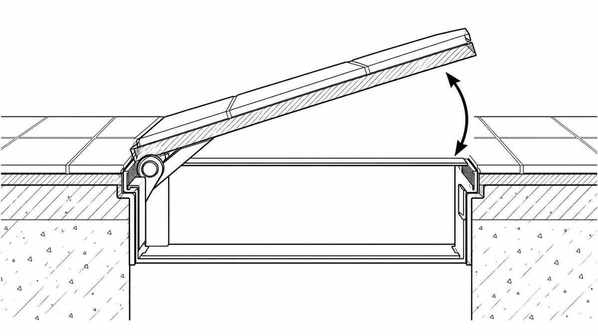

скрытый люк под плитку — это алюминиевая или стальная рамка с плиткой на крышке, зазор 2–3 мм, 2–4 петли и магнитный или нажимной замок. Размеры: 300×300, 400×400, 500×600 мм, глубина 60–100 мм. Готовый люк стоит 3 500–15 000 руб., монтаж — 3 000–8 000 руб. Главное правило: люк ставят туда, где к коммуникациям нужен доступ раз в 1–3 года, а не «на всякий случай» — каждый лишний люк это шов, который со временем темнеет.
Размеры и что за люком

| Размер | Что помещается | Цена люка |
|---|---|---|
| 200×300 мм | один кран, ревизия | 3 500–7 000 руб. |
| 300×300 мм | счётчик, два крана | 4 000–9 000 руб. |
| 400×400 мм | коллектор, фильтр | 5 500–12 000 руб. |
| 500×600 мм | инсталляция, редуктор | 7 000–15 000 руб. |
| 600×600 мм | узел целиком | 9 000–18 000 руб. |
Размер выбирают по узлу плюс 50–100 мм запаса с каждой стороны: рукой в люк 300×300 мм можно дотянуться до крана, но не до второго вентиля за ним. Глубина рамки 60–100 мм — под плитку 8–10 мм, клей 5–10 мм и несущую крышку.
Типы люков
| Тип | Цена | Плюсы | Минусы |
|---|---|---|---|
| Нажимной (push-open) | 4 000–10 000 руб. | без ручки, ровная плоскость | нужно нажать с усилием |
| Магнитный | 5 000–12 000 руб. | открывается легко, держит плотно | магнит слабеет через 5–7 лет |
| На петлях с защёлкой | 3 500–8 000 руб. | дешево, ремонтопригодно | видна щель, нужна ручка |
| Съёмная крышка | 2 500–6 000 руб. | простая, дешёвая | снимать неудобно, плитка скалывается |
| Распашной на 4 петлях | 8 000–15 000 руб. | открывается на 180° | дорого, нужен запас места |
Для санузла с плиткой 600×600 берут нажимной или магнитный люк: они не нарушают рисунок. Съёмная крышка годится только для ревизии раз в несколько лет — при частом доступе плитка на ней отходит.
Где ставить люк
| Узел | Размер люка | Периодичность доступа |
|---|---|---|
| Счётчики воды | 400×400 мм | раз в месяц (показания) |
| Коллектор разводки | 500×600 мм | 2 раза в год |
| Редуктор давления | 300×300 мм | 1 раз в год |
| Инсталляция унитаза | 400×500 мм | раз в 3–5 лет |
| Вентиляция и фильтр | 300×300 мм | 2 раза в год |
Люк под счётчики ставят на высоте 900–1400 мм от пола: ниже — неудобно снимать показания, выше — не дотянуться. Под инсталляцию — на 200–300 мм выше кнопки смыва, чтобы добраться до клапана.
Монтаж: рамка и плитка
| Этап | Что делать | Ошибка |
|---|---|---|
| Разметка | по внутреннему размеру рамки + 5 мм | резать по внешнему — щель 10 мм |
| Ниша | глубина 60–100 мм, ровные края | рваные края не закрыть рамкой |
| Крепление рамки | дюбели или клей-пена по уровню | рамка «гуляет» — плитка треснет |
| Плитка на крышку | клей C2TE, шов совпадает с общим | шов не совпал — видно люк |
| Зазор | 2–3 мм по периметру | 0 мм — крышка не откроется |
| Затирка | эластичная, не эпоксидная | эпоксид склеивает крышку с рамкой |
Плитку на крышку клеят после установки рамки и выравнивания: сначала проверяют, что крышка открывается и закрывается без заеданий, потом клеят. Шов затирают эластичной затиркой — жёсткая трескается при открывании.
Смета 2026
| Позиция | Стоимость |
|---|---|
| Люк 400×400 магнитный | 5 500–12 000 руб. |
| Плитка на крышку (2 шт.) | 600–2 500 руб. |
| Клей C2TE и затирка | 1 000–2 500 руб. |
| Монтаж и подгонка | 3 000–8 000 руб. |
| Герметик санитарный | 400–900 руб. |
Итого 10 500–25 900 руб. под ключ. Люк 300×300 с нажимным замком обходится в 7 000–15 000 руб.
Люк и гидроизоляция
Люк в мокрой зоне — это разрыв в гидроизоляционном ковре. Если он стоит в душевой зоне или рядом, рамку сажают на герметик и заводят гидроизоляцию на рамку с нахлёстом 50 мм, иначе вода уходит по зазору за плитку.
| Зона | Требование | Цена |
|---|---|---|
| Вне мокрой зоны | герметик по периметру | 400–900 руб. |
| Рядом с душем | гидроизоляция на рамку 50 мм | 1 500–3 500 руб. |
| В душевой зоне | люк не рекомендуется | — |
| На полу | только герметичный люк с прокладкой | 8 000–18 000 руб. |
Люк на полу в санузле ставят только при доступе к трапу или фильтру — и берут модель с резиновой прокладкой и прижимом. Обычная нажимная крышка на полу пропускает воду при мытье.
Люк в вентиляционной шахте и на кухне
На кухне люк нужен для доступа к вентиляционному каналу, газовому крану и фильтру воды. Его прячут в фартуке или в шкафу: в шкафу — дешевле и проще, в фартуке — эстетичнее, но требует подрезки плитки по рисунку.
| Место | Размер | Особенность |
|---|---|---|
| Фартук у плиты | 300×300 мм | плитка в рисунок, зазор 2 мм |
| Шкаф под мойкой | без люка | доступ через дно шкафа |
| Вентканал | 200×300 мм | решётка вместо люка |
| Газовый кран | 300×300 мм | обязателен по требованиям газовой службы |
Газовый кран должен быть доступен всегда: запорное устройство за глухой стеной — нарушение, которое фиксируют при проверке. Люк в этом случае не «опция», а требование.
Уход и обслуживание
- Раз в год проверять ход петель и смазывать их силиконовой смазкой.
- Протирать зазор мягкой щёткой: затирка в зазоре — причина заедания.
- Магнитный замок чистить от налёта, при ослаблении — заменить магнит.
- Не хлопать крышкой: плитка на клеевом слое отходит от удара.
- Раз в 2–3 года обновлять герметик по периметру.
Если крышка начала заедать, не подрезают плитку сразу: сначала снимают затирку из зазора и проверяют регулировку петель. В 70 % случаев этого достаточно.
Порядок работ
- Определить узел и размер люка с запасом 50–100 мм.
- Разметить нишу по внутреннему размеру рамки плюс 5 мм.
- Вырезать нишу, обеспылить, прогрунтовать.
- Выставить рамку по уровню и плоскости стены, закрепить.
- Проверить ход крышки, отрегулировать петли и замок.
- Наклеить плитку на крышку, совместив швы с общим рисунком.
- Затереть швы эластичной затиркой, обработать периметр герметиком.
Ошибки и их цена
| Ошибка | Последствие | Исправление |
|---|---|---|
| Зазор 0 мм | крышка не открывается | подрезать плитку, переклеить |
| Жёсткая затирка | шов трескается | расшить и затереть эластичной |
| Рамка не по уровню | плитка на крышке ломается | переустановка рамки |
| Люк за мебелью | доступ невозможен | перенос люка — 5 000–12 000 руб. |
Чек-лист перед покупкой
- Размер люка больше узла на 50–100 мм с каждой стороны.
- Тип замка соответствует частоте доступа.
- Глубина ниши 60–100 мм.
- Зазор по периметру 2–3 мм.
- Затирка эластичная, не эпоксидная.
Частые вопросы
Какой размер люка нужен под счётчики воды?
400×400 мм: помещаются два счётчика и руки для снятия показаний. Минимум — 300×300 мм.
Видно ли скрытый люк на стене?
При совпадении швов и зазоре 2–3 мм — почти нет. Заметен, если рисунок плитки не совпал или затирка отличается по цвету.
Можно ли поставить люк в уже облицованную стену?
Да, но придётся вырезать плитку и часть основания. Стоимость — 5 000–12 000 руб. плюс замена 2–4 плиток.
Какой замок лучше — магнитный или нажимной?
Магнитный открывается легче и держит плотнее, но слабеет через 5–7 лет. Нажимной надёжнее, но требует усилия.
Чем затирать шов вокруг люка?
Эластичной цементной затиркой и санитарным силиконом по периметру. Эпоксидная затирка склеит крышку с рамкой.
Выдержит ли люк вес человека?
Рамки рассчитаны на 30–80 кг статической нагрузки. Наступать на крышку не рекомендуется — она не рассчитана на удар.